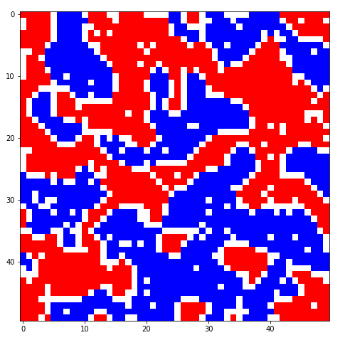

Matrix als Welt der Agenten¶
In agentenbasierten Modellen, in denen Raum eine Rolle spielt, wird dieser sehr oft mittels sogenannter Grids (auch Lattice genannt) dargestellt. Ein solches Grid ist eigentlich nichts anderes als eine Matrix, deren Zellen jeweils eine mögliche Position bzw. einen Ort in der simulierten Welt, auf welcher sich z.B. ein Agent befinden kann, darstellt. Grids lassen sich super grafisch darstellen und helfen so, entstehende räumliche Muster in der simulierten Welt zu erfassen. Unten sieht man z.B. den Endzustand eines Schelling-Modells.

Um eine solche Grafik wie oben zu erstellen, braucht man nicht nur eine spezielle Matplotlib-Funktion/Methode, welche einen solchen Diagramm-Typ erstellt, viel mehr müssen wir eine Matrix als einen bestimmten Datentyp in Python repräsentieren, um überhaupt die notwendigen Informationen über die Beschaffenheit des Grids an eine diagrammerstellende Funktion übergeben zu können. Bevor wir uns daher auf den nächsten Seiten anschauen, wie wir mit Matplotlib Matrizen grafisch darstellen können, schauen wir uns hier kurz an, als welcher Datentyp Matrizen innerhalb von Python repräsentiert werden können.
Matrizen als geschachtelte Listen¶
Wie können wir solche Matrizen in Python darstellen? Es gibt in Python zahlreiche spezielle Datentypen für Matrizen, z.B. aus dem Modul Numpy das sogenannte array oder aus dem Modul Pandas der sogenannte DataFrame. Da jedoch jedes neue Modul gleichzeitig auch das Erlernen der jeweils etwas eigenen “Syntax” und sonstiger Besonderheiten dieses Moduls bedeutet, sollte man Module vor allem als Programmierneuling nur dann benutzen, wenn man sie wirklich braucht. Tatächlich kann man eine Matrix auch relativ einfach mit den Python-Basics darstellen: als Liste von Listen. Innerhalb einer Liste befinden sich dabei Unterlisten, welche die Zeilen einer Matrix repräsentieren. Innerhalb jeder Unterliste befinden sich Elemente, deren Position jeweils einer Spalte der Matrix entspricht.
Im Folgenden ein Beispiel für eine Matrix mit 3 Zeilen und 3 Spalten. Um eine solche Matrix darzustellen, benötigt man eine Liste, mit 3 Unterlisten (Zeilen), welche wiederum jeweils 3 Elemente (Spalten) enthalten.
matrix = [ [1, 2, 3], [4, 5, 6], [7, 8, 9] ]
Das obige ist zwar technisch gesehen eine Matrix, sieht aber nicht wirklich so aus. Damit das ganze auch etwas mehr nach Matrix aussieht, kann man dieselbe geschachtelte Liste bzw. Matrix auch so hinschreiben:
matrix = [
[1, 2, 3],
[4, 5, 6],
[7, 8, 9],
]
Die Zahlen innerhalb der Matrix könnten z.B. codieren, welche Farbe in einem Diagramm für eine Zelle angezeigt werden soll oder auch für Agenten mit bestimmten Meinungen. Statt Zahlen könnten z.B. auch Dictionaries als Repräsentation für Agenten in die Zellen der Matrix eingefügt werden.
Möchte man nun auf ein Element der Liste zugreifen, müssen wir zunächst per Listenindizierung auf die Unterliste (Zeile) und dann auf die entsprechende Position in der Unterliste (Spalte) zugreifen. Möchte ich z.B. auf das Element in der ersten Zeile und der ersten Spalte zugreifen, muss ich zunächst auf die erste Zeile mit dem Index 0 zugreifen:
matrix[0]
[1, 2, 3]
Um dann in dieser Zeile bzw. Liste auf die erste Spalte bzw. Position zuzugreifen, muss ein weiteres mal der Index 0 verwendet werden:
matrix[0][0]
1
Um z.B. auf das Elemente in der zweiten Zeile und der dritten Spalte zuzugreifen, müssen entsprechend der Zeilen-Index 1 und der Spalten-Index 2 angegeben werden:
matrix[1][2]
6
Die allgemeine Syntax für den Zugriff auf die Elemente einer Matrix könnte man also so beschreiben:
matrix[ZEILE][SPALTE]
Matrizen per For-Loop erstellen¶
Kleine Matrizen kann man noch relativ gut per Hand erstellen. Manchmal muss man auch solch “individuelle” Matrizen erstellen, dass man um die Erstellung dieser per Hand nicht drumherum kommt. Oft können wir die Erstellung von Matrizen aber per For-Loop automatisieren. Unten erstelle ich mittels zweier geschachtelter For-Loops eine Matrix mit 10 Zeilen und 10 Spalten, in deren Zellen jeweils eine 0 eingefügt wird.
# Anzahl der Zeilen und Spalten festlegen
n_rows = 10
n_cols = 10
# Oberliste für Matrix erstellen
matrix = []
# für die Anzahl der Zeilen
for i in range(n_rows):
# Unterliste für Zeile erstellen
zeile = []
# für die Anzahl der Spalten
for j in range(n_cols):
# An die Zeile ein Element anhängen (In diesem Fall eine 0)
zeile.append(0)
# Zeile (Unterliste) an Matrix (Oberliste) anhängen
matrix.append(zeile)
matrix
[[0, 0, 0, 0, 0, 0, 0, 0, 0, 0],
[0, 0, 0, 0, 0, 0, 0, 0, 0, 0],
[0, 0, 0, 0, 0, 0, 0, 0, 0, 0],
[0, 0, 0, 0, 0, 0, 0, 0, 0, 0],
[0, 0, 0, 0, 0, 0, 0, 0, 0, 0],
[0, 0, 0, 0, 0, 0, 0, 0, 0, 0],
[0, 0, 0, 0, 0, 0, 0, 0, 0, 0],
[0, 0, 0, 0, 0, 0, 0, 0, 0, 0],
[0, 0, 0, 0, 0, 0, 0, 0, 0, 0],
[0, 0, 0, 0, 0, 0, 0, 0, 0, 0]]